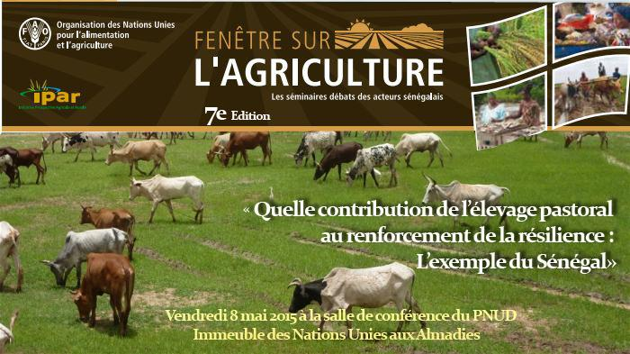
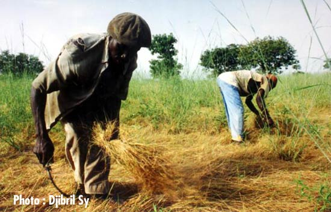

|
|
|||
| Accueil | Transformation | Contact | Idées et Débats |
Espace de discussion : on s’exprime, on discute, on réagit.
Comment l’agriculture peut-elle répondre au besoin d’emploi des jeunes ?
La crise migratoire du début des années 2000, qui a culminé en 2006 avec le départ massif de jeunes
des côtes ouest-africaines,
a révélé l’acuité de la question de l’emploi des jeunes en Afrique
subsaharienne et des risques de déstabilisation qui peuvent
en découler.
|  |
Fenêtre sur l’agriculture La FAO et l’IPAR organisent un moment d’échange, de réflexion et de partage sur le thème : « L’élevage pastoral, la sécurité alimentaire et nutritionnelle au Sénégal : quelle contribution des nouvelles politiques et initiatives d’appui au renforcement de la résilience ? ». |
|  |
Réforme foncière : comment faire ? Sur quels axes devrait porter la réforme foncière au Sénégal ? |


|
|---|